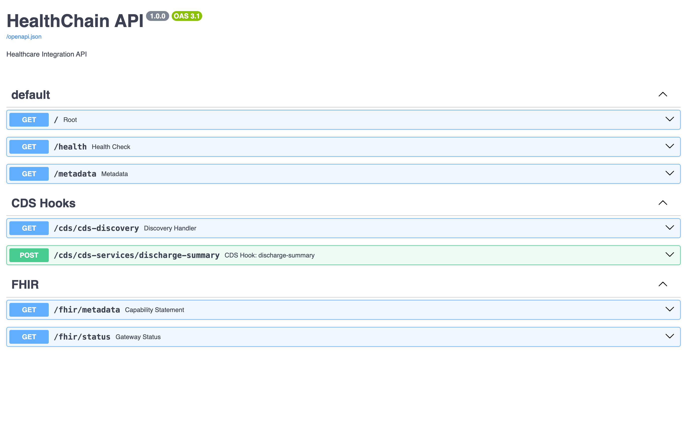

HealthChainAPI üè•
The HealthChainAPI is your main application that coordinates all the different gateways and services.
It's a FastAPI app under the hood, so you get all the benefits of FastAPI (automatic docs, type safety, performance) plus healthcare-specific features that makes it easier to work with healthcare data sources, such as FHIR APIs, CDS Hooks, and SOAP/CDA services.
Basic Usage
from healthchain.gateway import HealthChainAPI, FHIRGateway
import uvicorn
# Create your app
app = HealthChainAPI(
title="My Healthcare App",
description="AI-powered patient care",
)
# Add a FHIR gateway
fhir = FHIRGateway()
app.register_gateway(fhir)
# Run it (docs automatically available at /docs)
if __name__ == "__main__":
uvicorn.run(app)
You can also register multiple services of different protocols:
from healthchain.gateway import (
HealthChainAPI, FHIRGateway,
CDSHooksService, NoteReaderService
)
app = HealthChainAPI()
# Register everything you need
app.register_gateway(FHIRGateway(), path="/fhir")
app.register_service(CDSHooksService(), path="/cds")
app.register_service(NoteReaderService(), path="/soap")
# Your API now handles:
# /fhir/* - Patient data, observations, etc.
# /cds/* - Real-time clinical alerts
# /soap/* - Clinical document processing
Default Endpoints

The HealthChainAPI automatically provides several default endpoints:
Root Endpoint: GET /
Returns basic API information and registered components.
{
"name": "HealthChain API",
"version": "1.0.0",
"description": "Healthcare Integration Platform",
"gateways": ["FHIRGateway"],
"services": ["CDSHooksService", "NoteReaderService"]
}
Health Check: GET /health
Simple health check endpoint for monitoring.
Gateway Status: GET /gateway/status
Comprehensive status of all registered gateways and services.
{
"gateways": {
"FHIRGateway": {
"status": "active",
"sources": ["epic", "cerner"],
"connection_pool": {...}
}
},
"services": {
"CDSHooksService": {
"status": "active",
"hooks": ["patient-view", "order-select"]
}
},
"events": {
"enabled": true,
"dispatcher": "LocalEventDispatcher"
}
}
Event Integration
The HealthChainAPI coordinates events across all registered components. This is useful for auditing, workflow automation, and other use cases. For more information, see the Events page.
from healthchain.gateway.events.dispatcher import local_handler
app = HealthChainAPI()
# Register global event handler
@local_handler.register(event_name="fhir.patient.read")
async def log_patient_access(event):
event_name, payload = event
print(f"Patient accessed: {payload['resource_id']}")
# Register handler for all events from specific component
@local_handler.register(event_name="cdshooks.*")
async def log_cds_events(event):
event_name, payload = event
print(f"CDS Hook fired: {event_name}")
Dependencies and Injection
The HealthChainAPI provides dependency injection for accessing registered components.
Gateway Dependencies
from healthchain.gateway.api.dependencies import get_gateway
from fastapi import Depends
@app.get("/custom/patient/{id}")
async def get_enhanced_patient(
id: str,
fhir: FHIRGateway = Depends(get_gateway("FHIRGateway"))
):
"""Custom endpoint using FHIR gateway dependency."""
patient = await fhir.read(Patient, id)
return patient
# Or get all gateways
from healthchain.gateway.api.dependencies import get_all_gateways
@app.get("/admin/gateways")
async def list_gateways(
gateways: Dict[str, Any] = Depends(get_all_gateways)
):
return {"gateways": list(gateways.keys())}
Application Dependencies
from healthchain.gateway.api.dependencies import get_app
@app.get("/admin/status")
async def admin_status(
app_instance: HealthChainAPI = Depends(get_app)
):
return {
"gateways": len(app_instance.gateways),
"services": len(app_instance.services),
"events_enabled": app_instance.enable_events
}
See Also
- FHIR Gateway: Complete FHIR operations reference
- CDS Hooks Service: Complete CDS Hooks service reference
- NoteReader Service: Complete NoteReader service reference